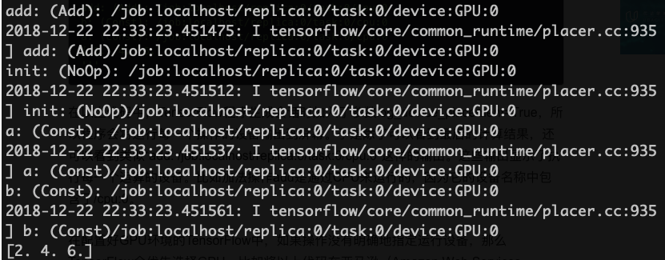
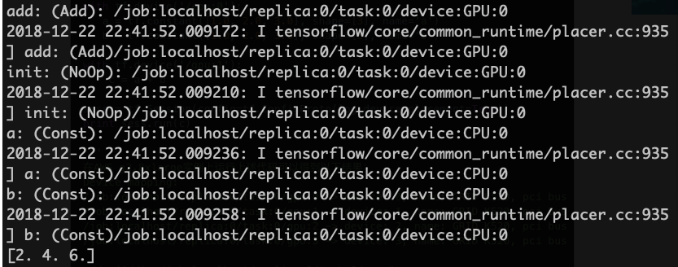
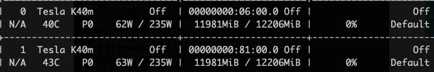

<!DOCTYPE html>
<html>
<head><meta name="generator" content="Hexo 3.8.0">
  <!-- hexo-inject:begin --><!-- hexo-inject:end --><meta charset="utf-8">
  
  <title>distributed tensorflow | 浙江大学超算队</title>
  <meta name="viewport" content="width=device-width, initial-scale=1, maximum-scale=1">
  
  <meta name="keywords" content="TechTensorflow">
  
  
  
  
  <meta name="description" content="Distributed Tensorflow1.单机log_device_placement单机情况比较简单，不需要特殊配置，TensorFlow会自动将计算任务分配到可用的GPU上，在定义session时，可以通过log_device_placement参数来打印具体的计算任务分配： 123456789import tensorflow as tfa = tf.constant([1.0, 2.">
<meta name="keywords" content="Tech,Tensorflow">
<meta property="og:type" content="article">
<meta property="og:title" content="Distributed Tensorflow">
<meta property="og:url" content="http://clusters.zju.edu.cn/2018/12/23/tensorflow/index.html">
<meta property="og:site_name" content="浙江大学超算队">
<meta property="og:description" content="Distributed Tensorflow1.单机log_device_placement单机情况比较简单，不需要特殊配置，TensorFlow会自动将计算任务分配到可用的GPU上，在定义session时，可以通过log_device_placement参数来打印具体的计算任务分配： 123456789import tensorflow as tfa = tf.constant([1.0, 2.">
<meta property="og:locale" content="default">
<meta property="og:image" content="http://clusters.zju.edu.cn/2018/12/23/tensorflow/1.png">
<meta property="og:image" content="http://clusters.zju.edu.cn/2018/12/23/tensorflow/2.png">
<meta property="og:image" content="http://clusters.zju.edu.cn/2018/12/23/tensorflow/3.png">
<meta property="og:image" content="http://clusters.zju.edu.cn/2018/12/23/tensorflow/5.png">
<meta property="og:updated_time" content="2019-05-11T14:29:55.769Z">
<meta name="twitter:card" content="summary">
<meta name="twitter:title" content="Distributed Tensorflow">
<meta name="twitter:description" content="Distributed Tensorflow1.单机log_device_placement单机情况比较简单，不需要特殊配置，TensorFlow会自动将计算任务分配到可用的GPU上，在定义session时，可以通过log_device_placement参数来打印具体的计算任务分配： 123456789import tensorflow as tfa = tf.constant([1.0, 2.">
<meta name="twitter:image" content="http://clusters.zju.edu.cn/2018/12/23/tensorflow/1.png">
  

  

  <link rel="icon" href="/css/images/ZJUSCT_Icon_Black.png">
  <link rel="apple-touch-icon" href="/css/images/ZJUSCT_Icon_Black.png">
  
    <link href="//fonts.googleapis.com/css?family=Source+Code+Pro" rel="stylesheet" type="text/css">
  
  <link href="https://fonts.googleapis.com/css?family=Open+Sans|Montserrat:700" rel="stylesheet" type="text/css">
  <link href="https://fonts.googleapis.com/css?family=Roboto:400,300,300italic,400italic" rel="stylesheet" type="text/css">
  <link href="//cdn.bootcss.com/font-awesome/4.6.3/css/font-awesome.min.css" rel="stylesheet">
  <style type="text/css">
    @font-face{font-family:futura-pt;src:url(https://use.typekit.net/af/9749f0/00000000000000000001008f/27/l?subset_id=2&fvd=n5) format("woff2");font-weight:500;font-style:normal;}
    @font-face{font-family:futura-pt;src:url(https://use.typekit.net/af/90cf9f/000000000000000000010091/27/l?subset_id=2&fvd=n7) format("woff2");font-weight:500;font-style:normal;}
    @font-face{font-family:futura-pt;src:url(https://use.typekit.net/af/8a5494/000000000000000000013365/27/l?subset_id=2&fvd=n4) format("woff2");font-weight:lighter;font-style:normal;}
    @font-face{font-family:futura-pt;src:url(https://use.typekit.net/af/d337d8/000000000000000000010095/27/l?subset_id=2&fvd=i4) format("woff2");font-weight:400;font-style:italic;}</style>
  <link rel="stylesheet" href="/css/style.css">

  <script src="/js/jquery-3.1.1.min.js"></script>
  <script src="/js/bootstrap.js"></script>

  <!-- Bootstrap core CSS -->
  <link rel="stylesheet" href="/css/bootstrap.css">

  
    <link rel="stylesheet" href="/css/dialog.css">
  

  

  
    <link rel="stylesheet" href="/css/header-post.css"><!-- hexo-inject:begin --><!-- hexo-inject:end -->
  

  
  
  

</head>
</html>


  <body data-spy="scroll" data-target="#toc" data-offset="50">


  

  
    <!-- hexo-inject:begin --><!-- hexo-inject:end --><div id="container">
      <div id="wrap">
        
          <header style="height:75px;" class="main_header">

    <div id="allheader" class="navbar navbar-default navbar-static-top" role="navigation">
        <div class="navbar-inner">

          <div class="container" style="height: 75px;">
            <button type="button" class="navbar-toggle" data-toggle="collapse" data-target=".navbar-collapse">
              <span class="sr-only">Toggle navigation</span>
              <span class="icon-bar"></span>
              <span class="icon-bar"></span>
              <span class="icon-bar"></span>
            </button>

            
              <a class="brand" style="
                 margin-top: 0px;" href="#" data-toggle="modal" data-target="#myModal">
                  
              </a>
            

            <div class="navbar-collapse collapse">
              <ul class="hnav navbar-nav">
                
                  <li> <a class="main-nav-link" href="/">Home</a> </li>
                
                  <li> <a class="main-nav-link" href="/archives">articles</a> </li>
                
                  <li> <a class="main-nav-link" href="/about">About</a> </li>
                
                  <li> <a class="main-nav-link" href="/teamIntro">team intro</a> </li>
                
                  <li> <a class="main-nav-link" href="/contact">join us</a> </li>
                
                  <li><div id="search-form-wrap">

    <form class="search-form">
        <input type="text" class="ins-search-input search-form-input" placeholder>
        <button type="submit" class="search-form-submit"></button>
    </form>
    <div class="ins-search">
    <div class="ins-search-mask"></div>
    <div class="ins-search-container">
        <div class="ins-input-wrapper">
            <input type="text" class="ins-search-input" placeholder="Type something...">
            <span class="ins-close ins-selectable"><i class="fa fa-times-circle"></i></span>
        </div>
        <div class="ins-section-wrapper">
            <div class="ins-section-container"></div>
        </div>
    </div>
</div>
<script>
(function (window) {
    var INSIGHT_CONFIG = {
        TRANSLATION: {
            POSTS: 'Posts',
            PAGES: 'Pages',
            CATEGORIES: 'Categories',
            TAGS: 'Tags',
            UNTITLED: '(Untitled)',
        },
        ROOT_URL: '/',
        CONTENT_URL: '/content.json',
    };
    window.INSIGHT_CONFIG = INSIGHT_CONFIG;
})(window);
</script>
<script src="/js/insight.js"></script>

</div></li>
            </ul></div>
          </div>

      </div>
    </div>

</header>

<div style="height:75px;witdh:100;">


</div>
        

        <div id="content" class="outer">
          
            <section id="main" style="float:none;"><article id="post-tensorflow" style="width: 75%; float:left;" class="article article-type-post" itemscope itemprop="blogPost">
    <div id="articleInner" class="article-inner">
        
        
        <header class="article-header">
            
  
    <h1 class="thumb" itemprop="name">
      Distributed Tensorflow
    </h1>
  

        </header>
        
        <div class="article-meta">
            
	<a href="/2018/12/23/tensorflow/" class="article-date">
	  <time datetime="2018-12-23T11:57:25.000Z" itemprop="datePublished">2018-12-23</time>
	</a>

            
            
	<a class="article-author">
		<span id="postAuthor">
			Author: 陈岩
		</span>
	</a>

        </div>
        <div class="article-entry" itemprop="articleBody">
            
            <h1 id="Distributed-Tensorflow"><a href="#Distributed-Tensorflow" class="headerlink" title="Distributed Tensorflow"></a>Distributed Tensorflow</h1><h2 id="1-单机"><a href="#1-单机" class="headerlink" title="1.单机"></a>1.单机</h2><h3 id="log-device-placement"><a href="#log-device-placement" class="headerlink" title="log_device_placement"></a>log_device_placement</h3><p>单机情况比较简单，不需要特殊配置，TensorFlow会自动将计算任务分配到可用的GPU上，在定义session时，可以通过<em>log_device_placement</em>参数来打印具体的计算任务分配：</p>
<figure class="highlight python"><table><tr><td class="gutter"><pre><span class="line">1</span><br><span class="line">2</span><br><span class="line">3</span><br><span class="line">4</span><br><span class="line">5</span><br><span class="line">6</span><br><span class="line">7</span><br><span class="line">8</span><br><span class="line">9</span><br></pre></td><td class="code"><pre><span class="line"><span class="keyword">import</span> tensorflow <span class="keyword">as</span> tf</span><br><span class="line"></span><br><span class="line">a = tf.constant([<span class="number">1.0</span>, <span class="number">2.0</span>, <span class="number">3.0</span>], shape=[<span class="number">3</span>], name=<span class="string">'a'</span>)</span><br><span class="line">b = tf.constant([<span class="number">1.0</span>, <span class="number">2.0</span>, <span class="number">3.0</span>], shape=[<span class="number">3</span>], name=<span class="string">'b'</span>)</span><br><span class="line">c = a + b</span><br><span class="line"></span><br><span class="line"><span class="keyword">with</span> tf.Session(config = tf.ConfigProto(log_device_placement = <span class="literal">True</span>)) <span class="keyword">as</span> sess:</span><br><span class="line">    sess.run(tf.global_variables_initializer())</span><br><span class="line">    print(sess.run(c))</span><br></pre></td></tr></table></figure>



<h3 id="指定设备"><a href="#指定设备" class="headerlink" title="指定设备"></a>指定设备</h3><p>如果需要让一些运算在特定的设备上执行，可以使用tf.device:</p>
<figure class="highlight python"><table><tr><td class="gutter"><pre><span class="line">1</span><br><span class="line">2</span><br><span class="line">3</span><br><span class="line">4</span><br><span class="line">5</span><br><span class="line">6</span><br><span class="line">7</span><br><span class="line">8</span><br><span class="line">9</span><br><span class="line">10</span><br><span class="line">11</span><br></pre></td><td class="code"><pre><span class="line"><span class="keyword">import</span> tensorflow <span class="keyword">as</span> tf</span><br><span class="line"></span><br><span class="line"><span class="keyword">with</span> tf.device(<span class="string">'/cpu:0'</span>):</span><br><span class="line">	a = tf.constant([<span class="number">1.0</span>, <span class="number">2.0</span>, <span class="number">3.0</span>], shape=[<span class="number">3</span>], name=<span class="string">'a'</span>)</span><br><span class="line">	b = tf.constant([<span class="number">1.0</span>, <span class="number">2.0</span>, <span class="number">3.0</span>], shape=[<span class="number">3</span>], name=<span class="string">'b'</span>)</span><br><span class="line"><span class="keyword">with</span> tf.device(<span class="string">'/gpu:0'</span>):</span><br><span class="line">	c = a + b</span><br><span class="line"></span><br><span class="line"><span class="keyword">with</span> tf.Session(config = tf.ConfigProto(log_device_placement = <span class="literal">True</span>)) <span class="keyword">as</span> sess:</span><br><span class="line">    sess.run(tf.global_variables_initializer())</span><br><span class="line">    print(sess.run(c))</span><br></pre></td></tr></table></figure>



<h3 id="环境变量"><a href="#环境变量" class="headerlink" title="环境变量"></a>环境变量</h3><p>尽管上面一个例子中我们只给CPU和GPU0指定了计算任务，但是两块显卡的显存都被占满了：</p>


<p>因为TensorFlow会默认占满所有可见GPU的显存，对于简单的计算任务，这样显然非常浪费，我们可以通过修改环境变量<em>CUDA_VISIBLE_DEVICES</em>解决这个问题:</p>
<figure class="highlight shell"><table><tr><td class="gutter"><pre><span class="line">1</span><br><span class="line">2</span><br></pre></td><td class="code"><pre><span class="line"><span class="meta">#</span><span class="bash"> 运行时指定环境变量</span></span><br><span class="line">CUDA_VISIBLE_DEVICES=0 python demo.py</span><br></pre></td></tr></table></figure>

<figure class="highlight python"><table><tr><td class="gutter"><pre><span class="line">1</span><br><span class="line">2</span><br><span class="line">3</span><br><span class="line">4</span><br></pre></td><td class="code"><pre><span class="line"><span class="comment"># Python 代码中修改环境变量</span></span><br><span class="line"><span class="keyword">import</span> os</span><br><span class="line">os.environ[<span class="string">'CUDA_VISIBLE_DEVICES'</span>]=<span class="string">'0'</span></span><br><span class="line">...</span><br></pre></td></tr></table></figure>

<h2 id="2-多机"><a href="#2-多机" class="headerlink" title="2.多机"></a>2.多机</h2><h3 id="In-graph-amp-Between-graph"><a href="#In-graph-amp-Between-graph" class="headerlink" title="In-graph &amp; Between-graph"></a>In-graph &amp; Between-graph</h3><p>TensorFlow的分布式训练有两种模式：In-graph和Between-graph</p>
<p>In-graph: 不同的机器执行计算图的不同部分，和单机多GPU模式类似，一个节点负责模型数据分发，其他节点等待接受任务，通过<em>tf.device(“/job:worker/task:n”)</em>来指定计算运行的节点</p>


<p>Between-graph:每台机器执行相同的计算图</p>
<blockquote>
<p>Author: 陈岩<br>PostDate: 2018.12.21</p>
</blockquote>

            
        </div>
        <footer class="article-footer">
            
            
            <h3>评论区</h3>

<script src="//cdn1.lncld.net/static/js/3.0.4/av-min.js"></script>
<script src="//unpkg.com/valine/dist/Valine.min.js"></script>
<!--<script src="//cdn.jsdelivr.net/npm/leancloud-storage@latest/dist/av-min.js"></script>
    <script src='//cdn.jsdelivr.net/npm/valine@latest/dist/Valine.min.js'></script>-->
<div id="vcomments"></div>
<script>
    var notify = 'false' == true ? true : false;
    var verify = 'false' == true ? true : false;
    var visitor = 'true' == true ? true : false;
    new Valine({
        el: '#vcomments',
        notify: notify,
        verify: verify,
        app_id: 'vzkq3TwdOhGcrpi7lsHAoz97-gzGzoHsz',
        app_key: 'St7KQEXXD6TapeMcRL7mjd2d',
        lang: 'en',
        placeholder: 'ヾﾉ≧∀≦)o快来评论一下吧!',
        avatar: 'monsterid',
        pageSize: '10',
        visitor: visitor
    });
</script>


            
            
            
            <div>
    <ul class="post-copyright">
        <li class="post-copyright-author">
            <strong>Post author:  </strong>ZJUSCT
        </li>
        <li class="post-copyright-link">
            <strong>Post link:  </strong>
            <a href="/2018/12/23/tensorflow/" target="_blank" title="Distributed Tensorflow">http://clusters.zju.edu.cn/2018/12/23/tensorflow/</a>
        </li>
        <li class="post-copyright-license">
            <strong>Copyright Notice:  </strong>
            All articles in this blog are licensed under <a rel="license" href="https://creativecommons.org/licenses/by-nc-nd/4.0/" target="_blank" title="Attribution-NonCommercial-NoDerivatives 4.0 International (CC BY-NC-ND 4.0)">CC BY-NC-ND 4.0</a>
            unless stating additionally.
        </li>
    </ul>
    <div>
</div></div>
            

        </footer>
    </div>
    
    
<nav id="article-nav">
  
    <a href="/2018/12/24/bp/" id="article-nav-newer" class="article-nav-link-wrap">
      <strong class="article-nav-caption">Newer</strong>
      <div class="article-nav-title">
        
          BP算法
        
      </div>
    </a>
  
  
    <a href="/2018/12/07/cuprof/" id="article-nav-older" class="article-nav-link-wrap">
      <strong class="article-nav-caption">Older</strong>
      <div class="article-nav-title">Quick Guide to CUDA Profiling</div>
    </a>
  
</nav>

    
</article>

<!-- Table of Contents -->

<aside id="toc-sidebar">
    <div id="toc" class="toc-article">
        <strong class="toc-title">Contents</strong>
        
        <ol class="nav"><li class="nav-item nav-level-1"><a class="nav-link" href="#Distributed-Tensorflow"><span class="nav-number">1.</span> <span class="nav-text">Distributed Tensorflow</span></a><ol class="nav-child"><li class="nav-item nav-level-2"><a class="nav-link" href="#1-单机"><span class="nav-number">1.1.</span> <span class="nav-text">1.单机</span></a><ol class="nav-child"><li class="nav-item nav-level-3"><a class="nav-link" href="#log-device-placement"><span class="nav-number">1.1.1.</span> <span class="nav-text">log_device_placement</span></a></li><li class="nav-item nav-level-3"><a class="nav-link" href="#指定设备"><span class="nav-number">1.1.2.</span> <span class="nav-text">指定设备</span></a></li><li class="nav-item nav-level-3"><a class="nav-link" href="#环境变量"><span class="nav-number">1.1.3.</span> <span class="nav-text">环境变量</span></a></li></ol></li><li class="nav-item nav-level-2"><a class="nav-link" href="#2-多机"><span class="nav-number">1.2.</span> <span class="nav-text">2.多机</span></a><ol class="nav-child"><li class="nav-item nav-level-3"><a class="nav-link" href="#In-graph-amp-Between-graph"><span class="nav-number">1.2.1.</span> <span class="nav-text">In-graph &amp; Between-graph</span></a></li></ol></li></ol></li></ol>
        
    </div>
</aside>

</section>
          
        </div>

        
        <footer id="footer">
  

  <div class="container">
      	<div class="row">
	      <p style="font-size:12px;margin:0;"> Powered by <a href="http://hexo.io/" target="_blank" style="color:#909090">Hexo</a> </p>
	      <p id="copyRightEn" style="font-size:12px;margin:0;">Copyright &copy; 2014 - 2019 浙江大学超算队 All Rights Reserved.</p>

	       
  		   
		</div>
  </div>
</footer>


<!-- min height -->

<script>
    var wrapdiv = document.getElementById("wrap");
    var contentdiv = document.getElementById("content");
    var allheader = document.getElementById("allheader");

    wrapdiv.style.minHeight = document.body.offsetHeight + "px";
    if (allheader != null) {
      contentdiv.style.minHeight = document.body.offsetHeight - allheader.offsetHeight - document.getElementById("footer").offsetHeight + "px";
    } else {
      contentdiv.style.minHeight = document.body.offsetHeight - document.getElementById("footer").offsetHeight + "px";
    }
</script>

      </div>
      <!-- <nav id="mobile-nav">
  
    <a href="/" class="mobile-nav-link">Home</a>
  
    <a href="/archives" class="mobile-nav-link">Articles</a>
  
    <a href="/about" class="mobile-nav-link">About</a>
  
    <a href="/teamIntro" class="mobile-nav-link">Team Intro</a>
  
    <a href="/contact" class="mobile-nav-link">Join Us</a>
  
</nav> -->
      

<!-- mathjax config similar to math.stackexchange -->

<script type="text/x-mathjax-config">
  MathJax.Hub.Config({
    tex2jax: {
      inlineMath: [ ['$','$'], ["\\(","\\)"] ],
      processEscapes: true
    }
  });
</script>

<script type="text/x-mathjax-config">
    MathJax.Hub.Config({
      tex2jax: {
        skipTags: ['script', 'noscript', 'style', 'textarea', 'pre', 'code']
      }
    });
</script>

<script type="text/x-mathjax-config">
    MathJax.Hub.Queue(function() {
        var all = MathJax.Hub.getAllJax(), i;
        for(i=0; i < all.length; i += 1) {
            all[i].SourceElement().parentNode.className += ' has-jax';
        }
    });
</script>

<script type="text/javascript" src="https://cdn.mathjax.org/mathjax/latest/MathJax.js?config=TeX-AMS-MML_HTMLorMML">
</script>


  <link rel="stylesheet" href="/fancybox/jquery.fancybox.css">
  <script src="/fancybox/jquery.fancybox.pack.js"></script>


<script src="/js/scripts.js"></script>


  <script src="/js/dialog.js"></script>


  


    </div>
  

  <div class="modal fade" id="myModal" tabindex="-1" role="dialog" aria-labelledby="myModalLabel" aria-hidden="true" style="display: none;">
  <div class="modal-dialog">
    <div class="modal-content">
      <div class="modal-header">
        <h2 class="modal-title" id="myModalLabel">ZJUSCT</h2>
      </div>
      <hr style="margin-top:0px; margin-bottom:0px; width:80%; border-top: 3px solid #000;">
      <hr style="margin-top:2px; margin-bottom:0px; width:80%; border-top: 1px solid #000;">


      <div class="modal-body">
      
        <div style="margin:6px;">
        </div>

        <div>
          <a data-toggle="collapse" data-parent="#accordion" href="#collapseThree" aria-expanded="true" aria-controls="collapseThree">&nbsp;&nbsp;&nbsp;&nbsp;&nbsp;&nbsp;About&nbsp;&nbsp;&nbsp;&nbsp;&nbsp;&nbsp;</a>
        </div>

         <div id="collapseThree" class="panel-collapse collapse" role="tabpanel" aria-labelledby="headingThree">
          
          <div class="panel-body">
            浙江大学超算队
          </div>

          <div class="panel-body">
            Copyright © 2019 ZJUSCT All Rights Reserved.
          </div>

        </div>
      </div>


      <hr style="margin-top:0px; margin-bottom:0px; width:80%; border-top: 1px solid #000;">
      <hr style="margin-top:2px; margin-bottom:0px; width:80%; border-top: 3px solid #000;">
      <div class="modal-footer">
        <button type="button" class="close" data-dismiss="modal" aria-label="Close"><span aria-hidden="true">×</span></button>
      </div>
    </div>
  </div>
</div>

  <a id="rocket" href="#top" class=""></a>
  <script type="text/javascript" src="/js/totop.js?v=1.0.0" async=""></script>
  
    <a id="menu-switch"><i class="fa fa-bars fa-lg"></i></a>
  
<script type="text/x-mathjax-config">
    MathJax.Hub.Config({
        tex2jax: {
            inlineMath: [ ["$","$"], ["\\(","\\)"] ],
            skipTags: ['script', 'noscript', 'style', 'textarea', 'pre', 'code'],
            processEscapes: true
        }
    });
    MathJax.Hub.Queue(function() {
        var all = MathJax.Hub.getAllJax();
        for (var i = 0; i < all.length; ++i)
            all[i].SourceElement().parentNode.className += ' has-jax';
    });
</script>
<script src="http://cdn.mathjax.org/mathjax/latest/MathJax.js?config=TeX-AMS-MML_HTMLorMML"></script><!-- hexo-inject:begin --><!-- Begin: Injected MathJax -->
<script type="text/x-mathjax-config">
  MathJax.Hub.Config({"tex2jax":{"inlineMath":[["$","$"],["\\(","\\)"]],"skipTags":["script","noscript","style","textarea","pre","code"],"processEscapes":true},"TeX":{"equationNumbers":{"autoNumber":"AMS"}}});
</script>

<script type="text/x-mathjax-config">
  MathJax.Hub.Queue(function() {
    var all = MathJax.Hub.getAllJax(), i;
    for(i=0; i < all.length; i += 1) {
      all[i].SourceElement().parentNode.className += ' has-jax';
    }
  });
</script>

<script type="text/javascript" src="https://cdnjs.cloudflare.com/ajax/libs/mathjax/2.7.1/MathJax.js">
</script>
<!-- End: Injected MathJax -->
<!-- hexo-inject:end -->
</body>
</html>
